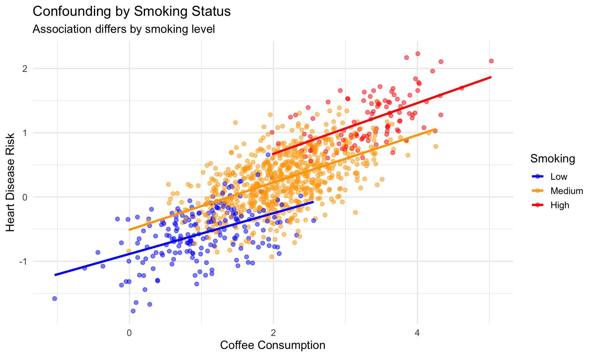
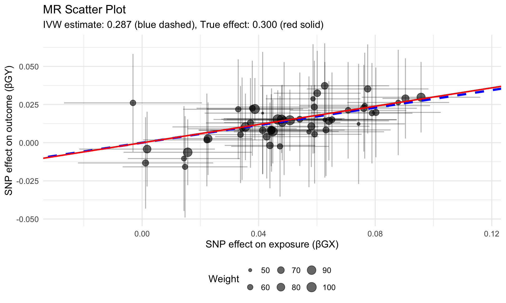

Mendelian Randomization — A gentle, practical introduction
1 What is Mendelian Randomization?
1.1 The Fundamental Problem in Observational Studies
In traditional observational epidemiology, we often observe associations between risk factors (exposures) and disease outcomes. However, correlation does not imply causation due to:
Key Challenges in Observational Studies
- Confounding: Unmeasured factors affect both exposure and outcome
- Reverse causation: Disease may influence the exposure
- Measurement error: Imprecise measurement of exposures
1.1.1 Example: Coffee and Heart Disease
Observational studies show coffee drinkers have different heart disease rates. But is this causal?
Problem: Smoking affects both coffee consumption AND heart disease risk!
1.2 The MR Solution: Using Genetics as Instrumental Variables
Mendelian Randomization uses genetic variants as instrumental variables (IVs) to estimate causal effects.
1.2.1 Why Genetics?
Advantages of Genetic Instruments
- Fixed at conception: Cannot be affected by disease (no reverse causation)
- Randomly allocated: Follow Mendel’s laws (natural randomization)
- Not confounded: By most environmental/behavioral factors
- Measurable: With high precision using modern genotyping
1.2.2 The MR Framework
Directed Acyclic Graph (DAG) for Mendelian Randomization
Key Idea: Estimate causal effect of X on Y by using genetic variant G:
\[\hat{\beta}_{XY} = \frac{\beta_{GY}}{\beta_{GX}}\]
2 Core Assumptions of MR
For a genetic variant to be a valid instrumental variable, it must satisfy three assumptions:
2.1 Assumption 1: Relevance
How to check: Look at exposure GWAS results, calculate F-statistics.
2.2 Assumption 2: Independence
How to check: Test for associations with potential confounders.
2.3 Assumption 3: Exclusion Restriction
How to check: Sensitivity analyses, look for biological plausibility.
2.3.1 Violations and Solutions
| Assumption | Violation | Solution |
|---|---|---|
| Relevance | Weak instruments | Use stronger SNPs, F-stat > 10 |
| Independence | Population stratification | Adjust for PCs, use within-family |
| Exclusion Restriction | Horizontal pleiotropy | Sensitivity analyses (MR-Egger, Weighted median) |
3 Types of MR Studies
3.1 1. One-Sample MR
Definition: Exposure and outcome measured in the same individuals.
3.1.1 Advantages:
- More statistical power
- Can use individual-level data
- Flexible covariate adjustment
3.1.2 Disadvantages:
- Susceptible to weak instrument bias
- Winner’s curse
- Requires access to individual-level data
3.2 2. Two-Sample MR
Definition: Use summary statistics from separate GWAS for exposure and outcome.
3.2.1 Advantages:
- Can leverage large GWAS consortia
- No participant overlap needed
- Publicly available summary statistics
3.2.2 Disadvantages:
- Requires careful harmonization
- Sample overlap can bias results
- Limited to SNPs in both studies
Two-Sample MR Workflow
4 Step-by-Step MR Analysis
4.1 Step 1: Select Genetic Instruments
4.1.1 Criteria for Instrument Selection
Code
# Instrument selection criteria
selection_criteria <- list(
significance = "p < 5e-8",
clumping = "r² < 0.001, distance > 10,000 kb",
f_statistic = "F > 10",
maf = "MAF > 0.01"
)
print("Instrument Selection Criteria:")[1] "Instrument Selection Criteria:"Code
str(selection_criteria)List of 4
$ significance: chr "p < 5e-8"
$ clumping : chr "r² < 0.001, distance > 10,000 kb"
$ f_statistic : chr "F > 10"
$ maf : chr "MAF > 0.01"4.1.2 Example: Selecting BMI Instruments
Code
# Using TwoSampleMR package
library(TwoSampleMR)
# Get instruments for BMI from IEU GWAS database
bmi_instruments <- extract_instruments(
outcomes = "ieu-a-2", # BMI GWAS
p1 = 5e-8, # Genome-wide significance
r2 = 0.001, # LD threshold
kb = 10000 # Distance for clumping
)
# Calculate F-statistic for each SNP
bmi_instruments$F_stat <- (bmi_instruments$beta.exposure^2) /
(bmi_instruments$se.exposure^2)
# Keep only strong instruments
bmi_instruments_strong <- subset(bmi_instruments, F_stat > 10)
cat(sprintf("Number of instruments: %d\n", nrow(bmi_instruments_strong)))
cat(sprintf("Mean F-statistic: %.2f\n", mean(bmi_instruments_strong$F_stat)))4.2 Step 2: Extract Outcome Data
Code
# Extract outcome data (Type 2 Diabetes)
t2d_outcome <- extract_outcome_data(
snps = bmi_instruments_strong$SNP,
outcomes = "ieu-a-26" # T2D GWAS
)
# Check how many SNPs are available in outcome
cat(sprintf("SNPs available in outcome: %d/%d\n",
nrow(t2d_outcome),
nrow(bmi_instruments_strong)))4.3 Step 3: Harmonize Data
Critical step: Ensure effect alleles are aligned between exposure and outcome.
Code
# Harmonize exposure and outcome data
harmonized_data <- harmonise_data(
exposure_dat = bmi_instruments_strong,
outcome_dat = t2d_outcome,
action = 2 # Remove palindromic SNPs with intermediate allele frequencies
)
# Check for palindromic SNPs removed
table(harmonized_data$mr_keep)
table(harmonized_data$palindromic)4.3.1 Understanding Harmonization
Effect Allele Harmonization
- Forward strand: A/G → same direction
- Flipped strand: A/G → flipped to T/C
- Palindromic: A/T or G/C → ambiguous when MAF ≈ 0.5
| SNP | Exposure_A1 | Exposure_A2 | Outcome_A1 | Outcome_A2 | Action | Keep |
|---|---|---|---|---|---|---|
| rs1 | A | G | A | G | Align | Yes |
| rs2 | G | A | A | G | Flip outcome | Yes |
| rs3 | A | T | T | A | Palindromic - OK | Yes (MAF) |
| rs4 | A | C | G | C | Flip + complement | Yes |
4.4 Step 4: Perform MR Analysis
4.4.1 Primary Method: Inverse Variance Weighted (IVW)
The IVW method is the main MR estimator:
\[\hat{\beta}_{IVW} = \frac{\sum_j w_j \beta_{GY,j} \beta_{GX,j}}{\sum_j w_j \beta_{GX,j}^2}\]
where \(w_j = 1 / \text{SE}(\beta_{GY,j})^2\)
Code
# Perform MR analysis
mr_results <- mr(harmonized_data, method_list = c(
"mr_ivw", # Inverse variance weighted
"mr_egger_regression", # MR-Egger
"mr_weighted_median", # Weighted median
"mr_weighted_mode" # Weighted mode
))
# View results
mr_results %>%
select(method, nsnp, b, se, pval) %>%
mutate(
OR = exp(b),
OR_lci = exp(b - 1.96*se),
OR_uci = exp(b + 1.96*se)
) %>%
kable(digits = 3, caption = "MR Results: Effect of BMI on Type 2 Diabetes")4.4.2 Understanding Different MR Methods
| Method | Assumptions | Pleiotropy | Power |
|---|---|---|---|
| IVW | All SNPs valid OR balanced pleiotropy | Assumes none/balanced | Highest |
| MR-Egger | InSIDE assumption | Detects directional | Lower |
| Weighted Median | ≥50% valid instruments | Robust to 50% invalid | Moderate |
| Weighted Mode | Plurality of valid instruments | Robust to outliers | Lower |
4.5 Step 5: Sensitivity Analyses
4.5.1 A. Heterogeneity Tests
Test if SNP-specific causal estimates are consistent.
Code
# Cochran's Q test for heterogeneity
heterogeneity_results <- mr_heterogeneity(harmonized_data)
print(heterogeneity_results)
# Interpret:
# - High Q statistic → heterogeneity (pleiotropy?)
# - p < 0.05 → significant heterogeneity4.5.2 B. Horizontal Pleiotropy Tests
Code
# MR-Egger intercept test
pleiotropy_results <- mr_pleiotropy_test(harmonized_data)
print(pleiotropy_results)
# Interpret:
# - Intercept ≠ 0 → directional pleiotropy
# - p < 0.05 → significant pleiotropy4.5.3 C. Leave-One-Out Analysis
Code
# Leave-one-out analysis
loo_results <- mr_leaveoneout(harmonized_data)
# Plot results
mr_leaveoneout_plot(loo_results)4.5.4 D. Single SNP Analysis
Code
# Estimate effect of each SNP individually
single_snp_results <- mr_singlesnp(harmonized_data)
# Forest plot
mr_forest_plot(single_snp_results)4.6 Step 6: Visualization
4.6.1 Scatter Plot
Code
# Scatter plot of SNP effects
scatter_plot <- mr_scatter_plot(mr_results, harmonized_data)
print(scatter_plot[[1]])4.6.2 Funnel Plot
Code
# Funnel plot to assess asymmetry (pleiotropy)
funnel_plot <- mr_funnel_plot(single_snp_results)
print(funnel_plot[[1]])5 Practical Example with Simulated Data
Let’s walk through a complete example with simulated data to understand each step.
5.1 Simulate Data
Code
set.seed(42)
# Simulate genetic instruments
n_snps <- 50
n_samples <- 100000
# True causal effect of X on Y
true_causal_effect <- 0.3
# Simulate SNP effects on exposure (βGX)
beta_gx <- rnorm(n_snps, mean = 0.05, sd = 0.02)
se_gx <- abs(rnorm(n_snps, mean = 0.01, sd = 0.002))
# Simulate SNP effects on outcome (βGY)
# βGY = βGX * βXY + pleiotropic effect
pleiotropy <- rnorm(n_snps, mean = 0, sd = 0.01)
beta_gy <- beta_gx * true_causal_effect + pleiotropy
se_gy <- abs(rnorm(n_snps, mean = 0.015, sd = 0.003))
# Create data frame
sim_data <- data.frame(
SNP = paste0("rs", 1:n_snps),
beta_gx = beta_gx,
se_gx = se_gx,
beta_gy = beta_gy,
se_gy = se_gy,
pleiotropy = pleiotropy
)
# Calculate Wald ratios for each SNP
sim_data$wald_ratio <- sim_data$beta_gy / sim_data$beta_gx
head(sim_data) %>% kable(digits = 4, caption = "Simulated MR Data (first 6 SNPs)")| SNP | beta_gx | se_gx | beta_gy | se_gy | pleiotropy | wald_ratio |
|---|---|---|---|---|---|---|
| rs1 | 0.0774 | 0.0106 | 0.0352 | 0.0149 | 0.0120 | 0.4551 |
| rs2 | 0.0387 | 0.0084 | 0.0221 | 0.0103 | 0.0104 | 0.5699 |
| rs3 | 0.0573 | 0.0132 | 0.0071 | 0.0185 | -0.0100 | 0.1248 |
| rs4 | 0.0627 | 0.0113 | 0.0373 | 0.0142 | 0.0185 | 0.5950 |
| rs5 | 0.0581 | 0.0102 | 0.0108 | 0.0136 | -0.0067 | 0.1852 |
| rs6 | 0.0479 | 0.0106 | 0.0154 | 0.0113 | 0.0011 | 0.3220 |
5.2 Perform IVW Analysis
Code
# Manual IVW calculation
weights <- 1 / (sim_data$se_gy^2)
beta_ivw <- sum(weights * sim_data$beta_gy * sim_data$beta_gx) /
sum(weights * sim_data$beta_gx^2)
se_ivw <- sqrt(1 / sum(weights * sim_data$beta_gx^2))
cat(sprintf("True causal effect: %.3f\n", true_causal_effect))True causal effect: 0.300Code
cat(sprintf("IVW estimate: %.3f (SE: %.3f)\n", beta_ivw, se_ivw))IVW estimate: 0.287 (SE: 0.038)Code
cat(sprintf("95%% CI: [%.3f, %.3f]\n",
beta_ivw - 1.96*se_ivw,
beta_ivw + 1.96*se_ivw))95% CI: [0.213, 0.361]5.3 Visualize SNP Effects
Code
ggplot(sim_data, aes(x = beta_gx, y = beta_gy)) +
geom_point(aes(size = 1/se_gy), alpha = 0.6) +
geom_errorbar(aes(ymin = beta_gy - 1.96*se_gy,
ymax = beta_gy + 1.96*se_gy), alpha = 0.3) +
geom_errorbarh(aes(xmin = beta_gx - 1.96*se_gx,
xmax = beta_gx + 1.96*se_gx), alpha = 0.3) +
geom_abline(intercept = 0, slope = beta_ivw,
color = "blue", size = 1.5, linetype = "dashed") +
geom_abline(intercept = 0, slope = true_causal_effect,
color = "red", size = 1, linetype = "solid") +
labs(x = "SNP effect on exposure (βGX)",
y = "SNP effect on outcome (βGY)",
title = "MR Scatter Plot",
subtitle = sprintf("IVW estimate: %.3f (blue dashed), True effect: %.3f (red solid)",
beta_ivw, true_causal_effect),
size = "Weight") +
theme_minimal(base_size = 14) +
theme(legend.position = "bottom")
5.4 Check for Pleiotropy
Code
# MR-Egger regression (manual)
egger_fit <- lm(beta_gy ~ beta_gx, weights = weights, data = sim_data)
egger_intercept <- coef(egger_fit)[1]
egger_slope <- coef(egger_fit)[2]
cat(sprintf("MR-Egger intercept: %.4f (p = %.3f)\n",
egger_intercept,
summary(egger_fit)$coefficients[1, 4]))MR-Egger intercept: -0.0042 (p = 0.157)Code
cat(sprintf("MR-Egger slope: %.3f\n", egger_slope))MR-Egger slope: 0.358Code
# Interpret
if (summary(egger_fit)$coefficients[1, 4] < 0.05) {
cat("\n⚠️ Warning: Significant intercept suggests directional pleiotropy!\n")
} else {
cat("\n✓ No evidence of directional pleiotropy\n")
}
✓ No evidence of directional pleiotropy6 Common Pitfalls and How to Avoid Them
6.1 1. Weak Instrument Bias
Problem
Using weak instruments (F < 10) biases estimates toward the confounded observational association.
Solution: - Calculate F-statistics for all instruments - Remove SNPs with F < 10 - Report mean F-statistic
Code
# Calculate F-statistic
sim_data$F_stat <- (sim_data$beta_gx / sim_data$se_gx)^2
cat(sprintf("Mean F-statistic: %.2f\n", mean(sim_data$F_stat)))Mean F-statistic: 39.19Code
cat(sprintf("Proportion with F > 10: %.1f%%\n",
100 * mean(sim_data$F_stat > 10)))Proportion with F > 10: 82.0%6.2 2. Horizontal Pleiotropy
Problem
SNPs affect outcome through pathways other than the exposure.
Solutions: - Use multiple MR methods (MR-Egger, Weighted median) - Perform pleiotropy tests - Remove outlier SNPs - Use more specific instruments
6.3 3. Population Stratification
Problem
Systematic ancestry differences confound SNP-outcome associations.
Solutions: - Use GWAS with proper ancestry adjustment - Perform within-family MR - Check for genomic inflation
6.4 4. Sample Overlap
Problem
Overlapping samples between exposure and outcome GWAS can bias two-sample MR.
Solutions: - Use non-overlapping cohorts when possible - Apply corrections for sample overlap - Be conservative with p-value interpretation
7 Advanced Topics
7.1 Multivariable MR (MVMR)
When you want to estimate the direct effect of exposure while adjusting for other risk factors:
Example: Effect of BMI on CHD, adjusting for T2D.
7.2 Bidirectional MR
Test for reverse causation by performing MR in both directions:
X → Y (forward MR)
Y → X (reverse MR)7.3 Non-linear MR
Test for non-linear dose-response relationships using: - Stratified MR (by exposure levels) - Fractional polynomial MR - Piecewise linear MR
8 Reporting MR Results
8.1 Essential Elements
A complete MR analysis report should include:
8.1.1 1. Methods Section
We performed two-sample Mendelian randomization using summary
statistics from [EXPOSURE_GWAS] and [OUTCOME_GWAS]. We selected
genetic instruments significantly associated with [EXPOSURE]
(p < 5×10⁻⁸), independent (r² < 0.001 within 10,000 kb), and
with F-statistic > 10.
We harmonized effect alleles and performed inverse variance
weighted (IVW) analysis as the primary method. Sensitivity
analyses included MR-Egger regression, weighted median, and
weighted mode. We assessed heterogeneity using Cochran's Q test
and horizontal pleiotropy using the MR-Egger intercept test.8.1.2 2. Results Section
| Method | N_SNPs | OR | 95% CI | P_value |
|---|---|---|---|---|
| IVW | 50 | 1.32 | 1.22-1.43 | 0 |
| MR-Egger | 50 | 1.28 | 1.14-1.44 | 0 |
| Weighted Median | 50 | 1.35 | 1.22-1.49 | 0 |
| Weighted Mode | 50 | 1.34 | 1.17-1.53 | 0 |
8.1.3 3. Sensitivity Analyses
- Report heterogeneity (Q statistic, I², p-value)
- Report pleiotropy test (MR-Egger intercept, p-value)
- Show leave-one-out analysis
- Include funnel plot and scatter plot
8.1.4 4. Interpretation
Good Interpretation Example
“Using [N] genetic instruments explaining [X%] of variance in [EXPOSURE], we found evidence for a causal effect on [OUTCOME] (IVW: OR = [X], 95% CI [X-Y], p = [Z]). Sensitivity analyses using MR-Egger, weighted median, and weighted mode yielded consistent results. We found no evidence of horizontal pleiotropy (MR-Egger intercept p = [X]) or heterogeneity (Cochran’s Q p = [Y]), supporting the validity of our findings.”
9 Resources and Further Reading
9.1 Software Packages
9.1.1 R Packages
- TwoSampleMR: Comprehensive MR analysis pipeline
- MendelianRandomization: Multiple MR methods
- MRInstruments: Pre-extracted instruments
- MRPRESSO: Outlier detection
- MRMix: Robust to pleiotropy
9.1.2 Installation
Code
# Install from CRAN
install.packages("MendelianRandomization")
# Install TwoSampleMR from GitHub
# install.packages("remotes")
remotes::install_github("MRCIEU/TwoSampleMR")
# Install MRPRESSO
remotes::install_github("rondolab/MR-PRESSO")9.2 Key Publications
- Foundational Papers:
- Davey Smith & Ebrahim (2003). “‘Mendelian randomization’: can genetic epidemiology contribute to understanding environmental determinants of disease?” Int J Epidemiol
- Lawlor et al. (2008). “Mendelian randomization: using genes as instruments for making causal inferences in epidemiology.” Stat Med
- Two-Sample MR:
- Pierce & Burgess (2013). “Efficient design for Mendelian randomization studies: subsample and 2-sample instrumental variable estimators.” Am J Epidemiol
- Sensitivity Methods:
- Bowden et al. (2015). “Mendelian randomization with invalid instruments: effect estimation and bias detection through Egger regression.” Int J Epidemiol
- Bowden et al. (2016). “Consistent estimation in Mendelian randomization with some invalid instruments using a weighted median estimator.” Genet Epidemiol
- Guidelines:
- Burgess et al. (2019). “Guidelines for performing Mendelian randomization investigations.” Wellcome Open Res
- Skrivankova et al. (2021). “Strengthening the Reporting of Observational Studies in Epidemiology Using Mendelian Randomization: The STROBE-MR Statement.” JAMA
9.3 Online Resources
- MR-Base Platform: http://www.mrbase.org/
- IEU GWAS Database: https://gwas.mrcieu.ac.uk/
- NHGRI-EBI GWAS Catalog: https://www.ebi.ac.uk/gwas/
- TwoSampleMR Documentation: https://mrcieu.github.io/TwoSampleMR/
9.4 Tutorials and Courses
- MR-Base Online Course: Free online tutorial
- Burgess Lab Resources: https://sb452.github.io/
- YouTube: Search for “Mendelian Randomization tutorial”